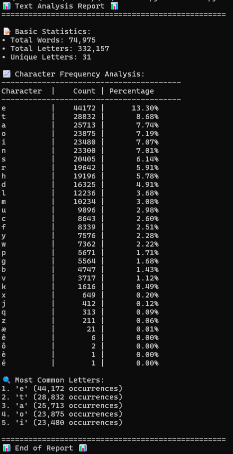

Bookbot: Text Analysis Toolkit
This tool reads a text file (e.g., a classic novel like Frankenstein)
and analyzes its content to produce a comprehensive report.
It's an excellent starting point for anyone interested in text analysis,
data visualization, or building practical Python applications.
View on GitHub

AI-Driven Data Analysis Platform
An innovative platform that leverages machine learning algorithms to analyze large datasets,
providing actionable insights for businesses. This project showcases advanced data processing
techniques and intuitive data visualization.
Learn More

Ethical AI Framework
A comprehensive framework for developing and implementing ethical AI systems.
This project addresses key concerns in AI ethics, including bias mitigation,
transparency, and accountability in machine learning models.
Explore Project